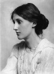

Virginia Woolf (1882–1941) yenilikçi roman ve kısa öykülerinde, zaman ve bilinç gibi konuların işlenmesini mümkün kılan yeni kurgusal yazım teknikleri geliştirmiştir. Kendisinden ilham alan üretken bir yazarlar neslinin yetişmesine katkı sunmuştur. Woolf aynı zamanda eleştirmen ve yayıncıdır. T. S. Eliot (1888–1965) ve E. M. Forster (1879–1970) gibi hayran olduğu isimlerin de aralarında bulunduğu yazarlarla birlikte çalışmıştır.

Woolf’un romanları arasında Mrs. Dalloway (Bayan Dalloway / 1925), To the Lighthouse (Deniz Feneri / 1927) ve Orlando (1928) gibi çok ses getiren eserler bulunmaktadır. A Room of One’s Own (Kendine Ait Bir Oda / 1929) isimli uzun denemesi, kendisi gibi kadın yazarlara önerilerde bulunmaktadır: “Bir kadının parası ve kendine ait bir odası olmalıdır ki kurgusal metinler yazabilsin.”
Asıl adı Adeline Virginia Stephen olan Woolf önde gelen Londralı bir ailenin çocuğuydu. Babası Sir Leslie Stephen (1832–1904) bir yazar ve İsviçre Alpleri’nin doruklarına tırmanmış bir dağcıydı. Woolf büyüdüğü sırada ailesinin tanıdığı pek çok edebiyatçı vardı. Bunlardan biri de Amerikalı yazar Henry James (1843–1916) idi.
1904 yılında babasının ölümünün ardından Londra’nın Bloomsbury mahallesine taşındı. Burada Bloomsbury Grubu olarak anılan entelektüel grubun liderlerinden biri oldu. Yazarlardan, şairlerden ve sosyal bilimcilerden oluşan kulüp ilerici politikalarla ve edebiyatta modernist yaklaşımla ilgilenmekteydi. 1912 yılında grup üyesi Leonard Woolf (1880–1969) ile evlendi.
Beş yıl sonra çift Hogarth Press adında bir yayınevi kurdu. Bu yayınevi 1922 yılından itibaren Woolf’un pek çok önemli eserini basacaktı. Woolf eserlerinde zamanın kesintili doğası üzerinde durmuş, karakterlerinin hem geçmişi hem de varolan anı nasıl aynı anda deneyimlediğini incelikli bir şekilde göstermiştir. Kahramanlarının yaşadığı duygusal karmaşıklığı ve gözlemlerini anlatmak için bilinç akışı yöntemine başvurmuştur.
Woolf hayatı boyunca birkaç kez depresyon geçirdi. II. Dünya Savaşı yıllarında Nazi bombardımanı sırasında evlerinin hasar görmesi onu büyük bir hayal kırıklığına uğrattı. Elli dokuz yaşında kendini suda boğarak intihar etti.
Ek Bilgiler
1- Woolf ailesinin bodrumunda elle idare edilen bir baskı makinası vardı. Adını yaşadıkları evden alan Hogarth Press isimli yayınevlerinde bastıkları kitaplar için bu makinayı 1932 yılına kadar kullanmaya devam ettiler.
2- Hogarth Press 1920’ler ve 1930’larda Sigmund Freud’un (1856-1939) ilk İngilizce çevirilerini yayınladı. Ancak Woolf ünlü psikanalistle ilk defa 1939’da tanıştı. Ondan söz ederken “çok çekmiş yaşlı bir adam” ifadesini kullanmıştır.
3- Oyun yazarı Edward Albee (1928–) Tony ödülü kazanan bir oyununa “Who’s Afraid of Virginia Woolf?” (Kim Korkar Virginia Woolf’tan?) (1962) adını vermişti. Albee oyununa adını veren bu sözü New York City’deki bir restoranın tuvaletindeki aynanın üzerinde gördüğünü söylüyordu. Bunu bir türlü aklından çıkaramamıştı. Yaşadığı bu deneyim oyununun finaline ilham kaynağı olmuştu.